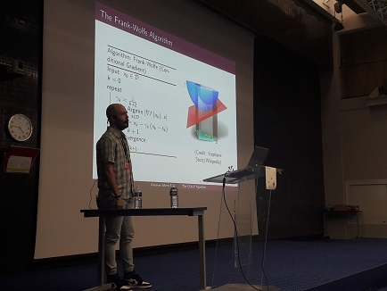

My name is Antonio Silveti-Falls but I mostly go by Tony. I am an associate professor (maître de conférences en français) in France doing research in nonsmooth optimization. Since September 2022 I am at CentraleSupélec/University of Paris-Saclay in the Centre pour la Vision Numérique laboratory. I am also a part of the INRIA team OPIS - OPtImization for large Scale biomedical data. Last but not least, I am a proud member of the Fédération de Mathématiques de CentraleSupélec.
I work at the intersection of optimization theory and machine learning, with a focus on developing scalable algorithms for large-scale problems. A lot of my research looks at conditional gradient (Frank-Wolfe) methods and their applications, for instance to deep learning and training large neural networks. I have broad interests in {nonsmooth, stochastic, noneuclidean} optimization, such as using Bregman divergences or relaxed definitions of smoothness, spanning both convex and nonconvex settings. I am also very interested in developing the theory of path differentiable functions and conservative calculus to study automatic differentiation, especially for implicitly defined functions.